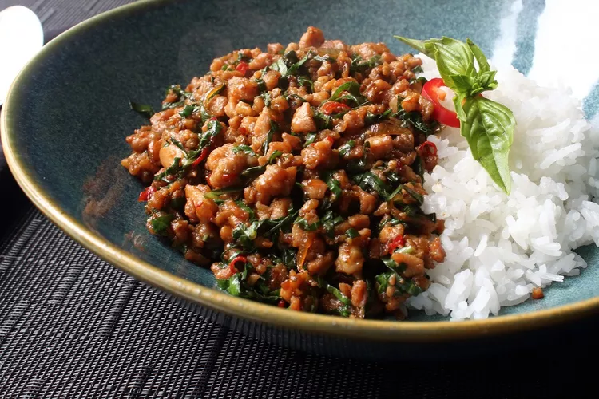

Spicy Thai Basil Chicken
This Spicy Thai Basil recipe is sure to knock your socks off. Flavorful, and spicy, this recipe is perfect for all occasions!
It will only take 25 minutes to whip this bad boy up.

Ingredients
- ⅓ cup chicken broth
- 1 tablespoon oyster sauce
- 1 tablespoon soy sauce, or as needed
- 2 teaspoons fish sauce
- 1 teaspoon white sugar
- 1 teaspoon brown sugar
- yadayadayada
Instructions
- Whisk chicken broth, oyster sauce, soy sauce, fish sauce, white sugar, and brown sugar together in a bowl until well blended.
- Heat large skillet over high heat. Drizzle in oil. Add chicken and stir fry until it loses its raw color, 2 to 3 minutes. Stir in shallots, garlic, and sliced chilies.
Continue cooking on high heat until some of the juices start to caramelize in the bottom of the pan, about 2 or 3 more minutes. Add about a tablespoon of the sauce mixture to the skillet;
cook and stir until sauce begins to caramelize, about 1 minute.
- Pour in the rest of the sauce. Cook and stir until sauce has deglazed the bottom of the pan. Continue to cook until sauce glazes onto the meat, 1 or 2 more minutes. Remove from heat.